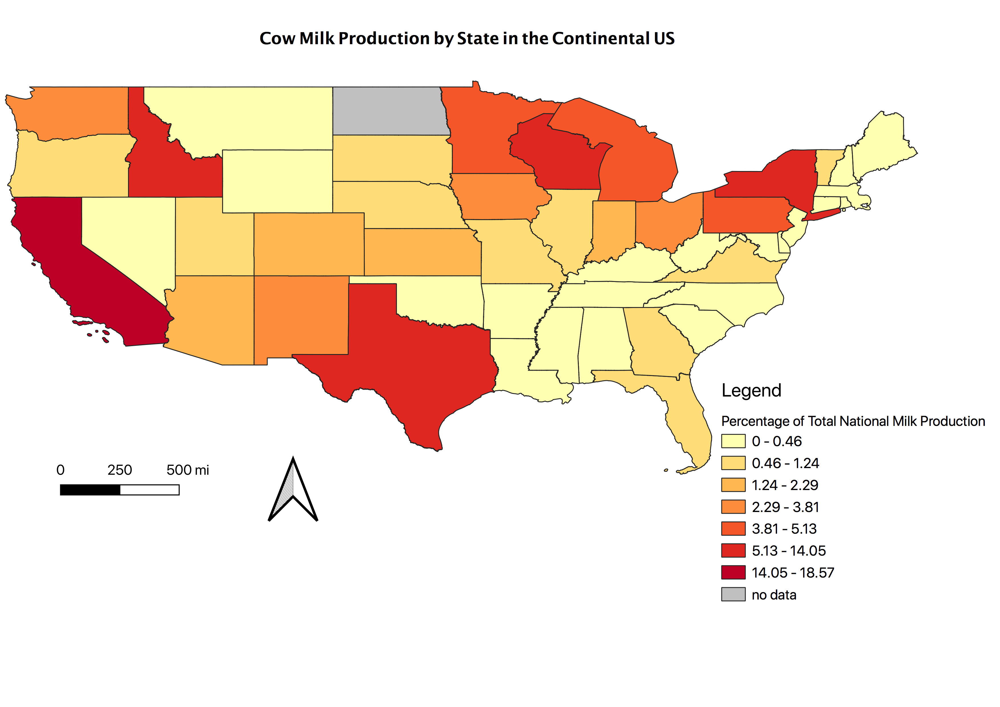

Homework 9: Chloropleth of Cow Milk Production by State
Jessica Gross
This map depicts which states contribute the most to milk produced in the US by percentage. I had some trouble finding data that I could work with, but stumbled across Dairy production and thought it might be interesting. I'd say I'm only really suprised that California contributes so much (I was unaware) and that some of the states in the South and Midwest do not (Oklahoma, Alabama, etc.). I also liked that I was counting cows and not people; I thought it would be different.

Data used for this project
Link to Shapefile
USDA ERS Data
Original CSV File
Cleaned CSV File